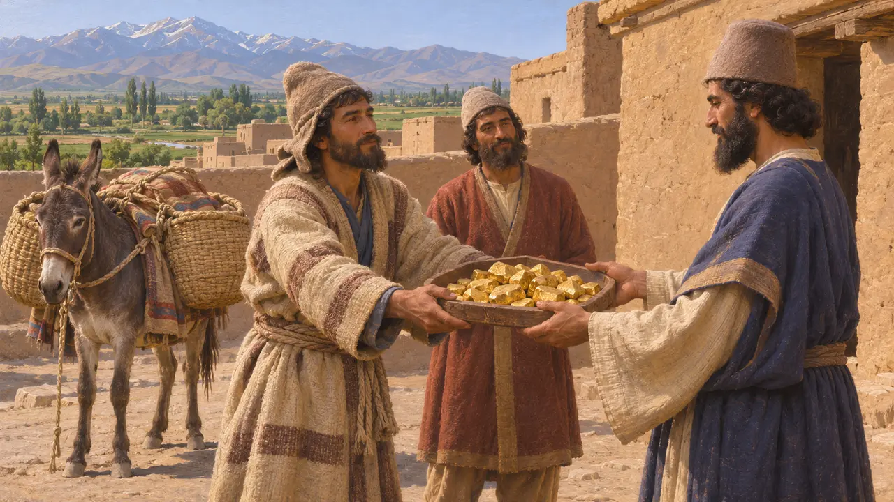
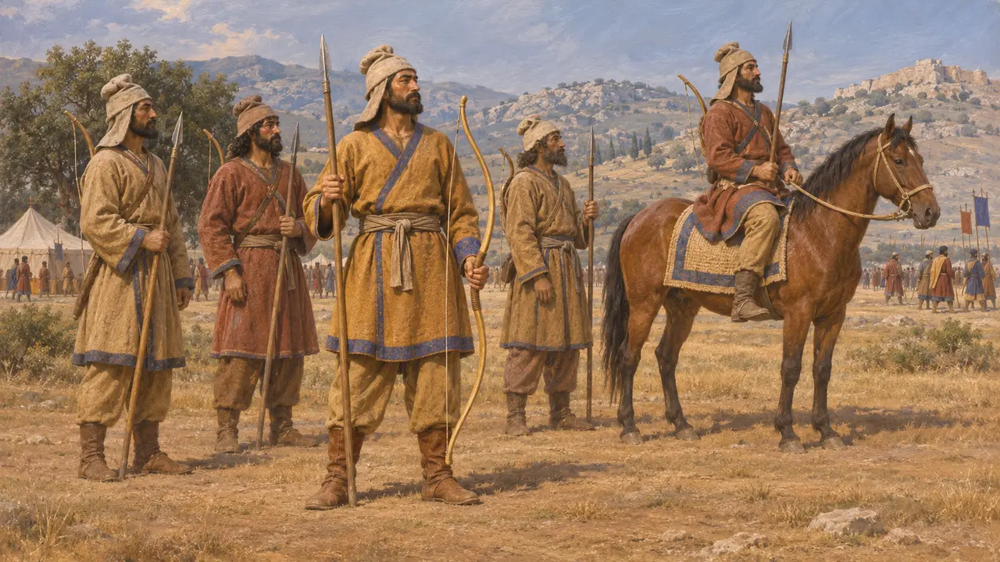
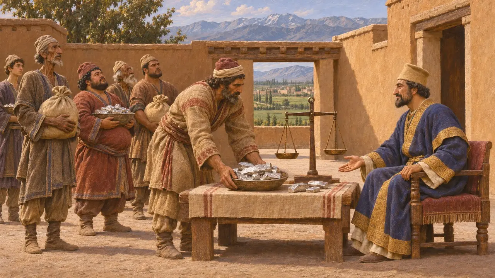
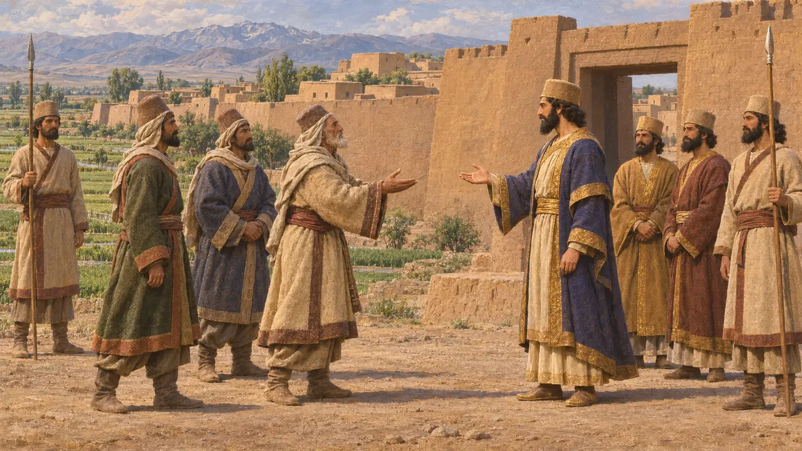
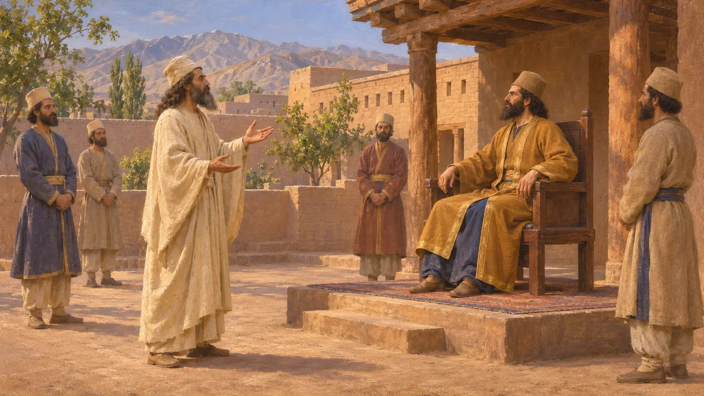

Los bactrianos
Pueblo del alto Oxo en torno a Bactra (Balj), una provincia oriental del Rey
Los bactrianos vivían en las fértiles llanuras del alto Oxo, en lo que hoy es el norte de Afganistán y las tierras situadas justo al norte. Su país, Bakhtrish en persa antiguo, fue una de las provincias orientales más importantes de los reyes aqueménidas. Aportaba oro, jinetes e infantes, y tropas bactrianas combatieron en Grecia en el 480 a. e. c. y el 479 a. e. c.
En el juego: El juego presenta a los bactrianos como lanceros del ejército del Rey. Heródoto dice que llevaban arcos autóctonos de caña además de lanzas cortas, así que la etiqueta del juego, que solo menciona la lanza, simplifica su equipo.

Una provincia en palabras del propio Rey
En los documentosDarío incluyó Bactria entre las tierras que le obedecían en su inscripción de Behistún. Cuando Margiana se sublevó en el 521 a. e. c., el persa Dadarshi, a quien Darío llama su sátrapa en Bactria, marchó contra el rebelde Frada y lo derrotó. En su carta fundacional del palacio de Susa, Darío afirma que el oro empleado allí se trajo de Sardes y de Bactria.
DB §6; DB §38; DSf

Los bactrianos en el ejército de Jerjes
Relato antiguoHeródoto describe a los bactrianos del 480 a. e. c. con un tocado muy parecido al de los medos, arcos de caña propios de su tierra y lanzas cortas, y dice que sus jinetes iban armados como sus infantes. Ellos y los saka estaban al mando de Histaspes, hijo de Darío y Atosa. Añade que Mardonio retuvo a bactrianos entre las tropas escogidas que dejó en Grecia, y que en Platea se enfrentaron a varios contingentes peloponesios menores.
Herodotus 7.64; Herodotus 7.86; Herodotus 8.113; Herodotus 9.31

Tributo, exilio y revuelta
Relato antiguoHeródoto sitúa a los bactrianos como el duodécimo distrito tributario, que pagaba 360 talentos de plata al año. Cuenta que unos cautivos de Barca, en Libia, fueron reasentados en una aldea bactriana. Relata también cómo Masistes, hermano de Jerjes y gobernador de Bactria, partió hacia la provincia para alzarla en rebelión y murió asesinado en el camino, lo que sugiere que la provincia podía servir de base de poder para un príncipe real.
Herodotus 3.92; Herodotus 4.204; Herodotus 9.113

Cómo Bactria cayó bajo dominio persa
En disputaHeródoto se limita a decir que Ciro planeaba una campaña contra los bactrianos y los sakas. Ctesias, que escribió más tarde, afirma que los bactrianos combatieron a Ciro y luego se sometieron, y que Ciro confió a su hijo menor, Bardiya, un gran mando oriental que incluía Bactria. Los historiadores aún debaten cómo se conquistó Bactria y si antes de los persas había sido un reino organizado o una tierra de señores locales.
Herodotus 1.153; Ctesias, Persica (epitome of Photius); P. Briant, From Cyrus to Alexander, 2002

Reyes anteriores y profetas posteriores
Leyenda posteriorEscritores griegos que seguían a Ctesias hablaban de un antiguo rey bactriano que resistió al asirio Nino hasta que Semíramis tomó su ciudad, un relato sin respaldo en los registros asirios. Una tradición iraní muy posterior, como la del Shahnameh, situó en Balj la corte del rey Goshtasp y del profeta Zaratustra. Ninguno de los dos relatos puede servir como prueba de la Bactria que gobernaron Darío y Jerjes.
Diodorus, book 2; Ferdowsi, Shahnameh
Fuentes
- Behistun inscription, DB §6 and §38
- Herodotus, Histories 1.153, 3.92, 4.204, 7.64, 7.86, 8.113, 9.31, 9.113
- Darius, Susa foundation charter, DSf
- P. Briant, From Cyrus to Alexander, 2002
- Ctesias, Persica (epitome of Photius)
- Diodorus, book 2